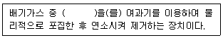
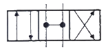
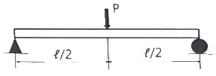
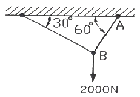

건설기계정비산업기사 (2018-08-19 기출문제)
1과목: 건설기계정비
1. 전자제어 디젤엔진의 연료 제어 항목과 거리가 먼 것은?
- 분사량 제어
- 분사 각도 제어
- 분사 압력 제어
- 분사 시기 제어
(정답률: 86%)

2. 토크 컨버터에서 임펠러보다 터빈이 고속으로 회전할 때에 대한 설명으로 틀린 것은?
- 스테이터를 임펠러의 반대 방향으로 회전시킨다.
- 스테이터를 터빈과 같은 방향으로 회전시킨다.
- 터빈에서 스테이터로 들어가는 흐름 속력은 점차 적어진다.
- 클러치 포인트 이상이 되면 토크 컨버터는 유체클러치로 작동한다.
(정답률: 47%)
3. 배기가스 재순환장치(EGR)는 어떤 배출가스를 줄이기 위한 장치인가?
- HC
- CO
- SO4
- NOX
(정답률: 84%)
4. 전압조정기의 조정 전압에 비해 컷아웃릴레이의 컷인 전압은?
- 낮게 설정한다
- 높게 설정한다
- 같게 설정한다
- 자동으로 설정된다
(정답률: 63%)
5. 타이어식 건설기계에서 제동력이 불충분한 원인으로 틀린 것은?
- 브레이크 오일이 부족할 때
- 라이닝에 오일이 묻었을 때
- 페이드 현상이 발생 되었을 때
- 브레이크 페달의 유격이 작을 때
(정답률: 77%)
6. 호퍼, 피더, 스프레더, 스크리드 등의 작업장치로 이루어진 건설기계는?
- 콘크리트 펌프
- 모터그레이더
- 아스팔트 피니셔
- 아스팔트 플랜트
(정답률: 59%)
7. 타이어 롤러의 차륜 지지방식이 아닌 것은?
- 고정식
- 진동식
- 요동식
- 독립지지식
(정답률: 49%)
8. 가스 봉압식 쇽업소버의 설명으로 틀린 것은?
- 질소가스를 봉입한다.
- 고압이므로 분해 시 주의해야 한다.
- 외통이 한겹으로 되어 있어 방열이 양호하다.
- 장시간 사용하면 오일에 기포가 발생되어 감쇠효과가 저하된다.
(정답률: 69%)
9. 축전지 전해액을 점검한 결과 비중이 1.240이고, 전해액의 온도는 40℃이다. 표준상태(20℃)의 비중으로 환산하면?
- 1.254
- 1.248
- 1.240
- 1.236
(정답률: 57%)
10. 광도가 12000cd인 전조등을 켰을 때 광축에 수직인 면의 조도가 480lux이면 전조등에서 수직면까지의 거리는?
- 0.5m
- 1.5m
- 5.0m
- 10.0m
(정답률: 60%)
11. 모터 그레이더의 탠덤장치에 대한 설명으로 틀린 것은?
- 작업 시 직진성을 좋게 한다.
- 전, 후 휠에 걸리는 하중을 같게 한다.
- 구동륜이 상, 하로 요동하여 충격을 완화한다.
- 좌, 우 차륜의 차동작용을 만들어 선회를 쉽게 한다.
(정답률: 56%)
12. 콘크리트 배칭 플랜트의 계량장치에 대한 설명 중 틀린 것은?
- 플랜트의 대부분이 중량계량식이다.
- 계량기는 계량 호퍼, 운동기구, 지시계 등으로 구성되어 있다.
- 계량방식은 시멘트, 물, 골재, 혼화재 등을 혼합하여 계량한다.
- 물과 혼화제를 유량계, 계량용기, 정량펌프로 용량을 계량하는 것도 있다.
(정답률: 44%)
13. 기동전동기의 전기자 코일 이상유무를 점검하는데 사용하는 시험기는?
- 메거옴 시험기
- 레지턴스 시험기
- 그로울러 시험기
- 하이드로메터 시험기
(정답률: 74%)
14. 오른쪽 바퀴만을 들어서 회전하도록 해 놓은 덤프트럭의 변속비가 2:1, 링 기어의 잇수 42, 구동 피니언의 잇수가 6일 때 오른쪽 바퀴의 회전수는 몇 rpm인가? (단, 추진수 회전수는 1400rpm 이다.)
- 100
- 200
- 400
- 800
(정답률: 50%)
15. 트랙 롤러에 대한 설명으로 맞는 것은?
- 싱글 플랜지형과 2중 플랜지형이 있으며, 레이디얼 방향의 하중은 플랜지부가 받는다.
- 5개의 롤러가 있을 경우 2번과 4번에는 단일 플랜지형 롤러가 사용되며, 그 외에는 2중 플랜지형이 설치되어 있다.
- 건설기계의 전체 중량을 트랙 위에 균등하게 분배하면서 회전하고 트랙의 회전위치를 정확하게 우지한다.
- 흙탕물, 진창, 토사가 묻어서 회전하므로 윤활제의 누설을 방지하고 흙물의 침입을 방지하기 위하여 더스트 실(dust seal)을 사용한다.
(정답률: 43%)
16. 굴삭기의 작업장치(어태치먼트)로 가장 거리가 먼 것은?
- 볼(Bowl)
- 버킷(Bucker)
- 브레이커(Breaker)
- 파일드라이브(Pile drive)
(정답률: 51%)
17. 전자제어장치에서 센서로부터 입력된 정보들을 연산, 제어하여 전기적 출력 신호로 변환시켜 액추에이터를 작동시키는 것은?
- 제어 유닛
- 입력 장치
- 출력 장치
- 메모리 부분
(정답률: 61%)
18. 토크 컨버터 내에서 오일 흐름 방향을 바꾸어 주는 것은?
- 가이드링
- 펌프
- 스테이터
- 터빈
(정답률: 69%)
19. 지게차의 작업장치에 대한 설명으로 틀린 것은?
- 마스트(mast) : 상·하 미끄럼 운동을 할 수 있는 레일이다.
- 핑거보드(finger board) : 포크가 설치되며, 백 레스트에 지지되어 있다.
- 백 레스트(back rest) : 화물이 운전석쪽으로 넘어지지 않도록 받쳐주는 부분이다.
- 리프트 체인(lift chain) : 포크의 상하운동을 도와주고 한쪽 끝은 백 레스트에 다른 한쪽은 마스트 스트랩에 고정된다.
(정답률: 50%)
20. 에어컨 장치에서 압축기의 작동불량 원인이 아닌 것은?
- 블러워 모터 고장
- 냉매가 없거나 부족
- 마그네틱 클러치 코일 불량
- 에어컨 장치 파이프 연결 불량
(정답률: 61%)
2과목: 내연기관
21. 내연기관에서 가솔린 200cc의 완전 연소를 위해 필요한 공기는 약 몇 kg인가? (단, 가솔린 비중 0.8, 이론공연비 14.7:1 이다.)
- 1.81
- 2.35
- 2.81
- 3.35
(정답률: 50%)
22. 디젤엔진의 압축착화방식에 대한 설명으로 옳은 것은?
- 고온의 냉각수에서 열을 얻어 착화한다.
- 전기장치에서 불꽃을 발생시켜 착화한다.
- 점화 플러그로 압축된 혼합기를 착화한다.
- 압축행정에서 발생하는 고온으로 착화한다.
(정답률: 77%)
23. 가솔린의 저위발열량이 50000kJ/kg이고, 가솔린 1kg의 보유 에너지 중 30%가 유효한 일로 바꾸어진다면 40kN의 무게를 가진 물체를 이동시킬 수 있는 거리는?
- 280m
- 375m
- 420m
- 525m
(정답률: 47%)
24. 전자제어 가솔린엔진에서 피스톤의 위치를 감지하여 연료 분사시기를 결정하는데 사용하는 센서는?
- 산소 센서
- 대기압 센서
- 모터 포지션 센서
- 크랭크 각 센서
(정답률: 78%)
25. 디젤엔진의 배기가스후처리 장치(DPF)에 대한 설명이다. ( )에 들어갈 내용으로 옳은 것은?

- CO
- PM
- NOx
- HC
(정답률: 69%)
26. 과급장치의 장점에 대한 설명으로 틀린 것은?
- 모든 회전 속도 영역에서 출력이 일정하다.
- 연소품질 개선으로 유해배출물 저감 효과가 있다.
- 행정체적을 증가시키지 않고도 출력을 증대시킬 수 있다.
- 과급에 의해 급기 중 산소량이 증대되어 착화지연이 단축된다.
(정답률: 58%)
27. 밸브의 구조 중 실린더 헤드의 밸브 시트와 직접 접촉하여 밸브 헤드의 열을 전달하는 부분은?
- 밸브 엔드
- 밸브 스템
- 밸브 페이스
- 밸브 가이드
(정답률: 47%)
28. 로터리기관에 대한 설명으로 틀린 것은?
- 윤활유 소비가 많다.
- 화염전파거리가 짧다
- 흡·배기 밸브가 없다.
- 회전피스톤과 편심축이 사용된다.
(정답률: 38%)
29. 윤활유에 대한 설명으로 틀린 것은?
- 운동 부분의 마찰 및 마멸을 감소시킨다.
- 윤활유의 온도가 오르면 점도가 높아진다.
- 엔진에서 발생하는 열을 흡수하므로 냉각이 필요하다.
- 유막을 형성하여 공기나 수분에 의해 금속이 부식되는 것을 막아준다.
(정답률: 80%)
30. 가솔린엔진에 사용되는 연료의 구비조건으로 틀린 것은?
- 공기와 혼합이 잘될 것
- 충분한 내 노크성이 있을 것
- 퍼컬레이션이 쉽게 일어날 것
- 연소 후 유해화합물을 남기지 않을 것
(정답률: 70%)
31. 기관의 플라이훨에 대한 설명으로 틀린 것은?
- 중량이 가벼워야 한다.
- 원심력과 인장력이 작용한다.
- 회전 중에 회전 관성이 작아야 한다.
- 중심부는 얇으며 바깥쪽 주위는 두꺼워야 한다.
(정답률: 65%)
32. 디젤기관에서 도시 연료소비율의 향상을 위해 필요한 사항으로 틀린 것은?
- 압축비 감소
- 냉각손실 저감
- 펌프손실 저감
- 착화지연시간 단축
(정답률: 63%)
33. 기관효휼에 대한 설명으로 옳은 것은?
- 1사이클 중 1개의 실린더에서 수행된 일과 행정체적의 비
- 일을 하기 위해 발생한 동력과 마찰에 의해 손실된 동력의 비
- 기관에 공급된 총 열량 중에서 일로 변환된 열량이 차지하는 비율
- 실린더에 흡입된 공기질량과 행정체적에 상당하는 대기질량의 비
(정답률: 61%)
34. 최대압력 또는 최고온도가 같을 경우 이론 열효율이 가장 높은 사이클은?
- 사바테 사이클
- 복합 사이클
- 정압 사이클
- 정적 사이클
(정답률: 47%)
35. 피스톤링 플러터링(fluttering) 현상을 방지하는 방법으로 틀린 것은?
- 링의 장력을 크게 한다.
- 링의 관성력을 작게 한다.
- 링 홈의 상·하 간격을 좁게 한다.
- 윤활유를 도피시킬 수 있는 홈을 링 밴드에 설치한다.
(정답률: 52%)
36. 전자제어 가솔린엔진(MPI)에서 이론공연비의 산정에 필요한 것은?
- 냉각수량
- 엔진 오일량
- 흡입 공기량
- 노멀 헵탄량
(정답률: 80%)
37. 엔진의 냉각장치에서 공랭식과 비교한 수냉식의 장점으로 틀린 것은?
- 냉각 작용이 균일하다.
- 차 실내의 난방이 용이하다.
- 구조가 간단하여 경제적이다.
- 기관의 연소 소음을 감소시킨다.
(정답률: 34%)
38. 수냉식 실린더 헤드에 대한 설명으로 틀린 것은?
- 기관의 열을 낮추기 위한 냉각수 통로가 있다.
- 고온·고압에서 강도와 열팽창률이 커야 한다
- 냉각수의 유출이 없도록 실린더 블록과의 기밀유지가 요구된다.
- 조기 점화 방지를 위하여 연소실 내 가열되기 쉬운 돌출부가 없어야 한다.
(정답률: 76%)
39. 디젤기관에서 배기가스 배출 특성에 관한 설명으로 틀린 것은?
- HC는 연료분사의 후적에 의한 혼합 불충분으로 발생한다.
- NOx의 발생량을 줄이기 위해서 연소실의 온도를 높여야 한다.
- 공기 과잉률이 높은 상태에서 연소하여 CO의 배출량이 적다.
- 대기 중에 배출되는 PM의 저감을 위해 배기가스 후처리장치를 사용한다.
(정답률: 61%)
40. 밸브 오버랩에 대한 설명으로 옳은 것은?
- 매 사이클이 끝날 무렵, 상사점 부근에서 흡기밸브와 배기밸브가 함께 닫혀 있는 구간
- 매 사이클이 끝날 무렵, 상사점 부근에서 흡기밸브와 배기밸브가 함께 열려 있는 구간
- 매 사이클이 끝날 무렵, 하사점 부근에서 흡기밸브와 배기밸브가 함께 닫혀 있는 구간
- 매 사이클이 끝날 무렵, 하사점 부근에서 흡기밸브와 배기밸브가 함께 열려 있는 구간
(정답률: 72%)
3과목: 유압기기 및 건설기계안전관리
41. 유압 프레스에서 힘의 전달 작동원리는 어느 이론에 기초를 둔 것인가?
- 파스칼의 원리
- 토리체리의 원리
- 보일·샤를의 법칙
- 아르키메데스의 원리
(정답률: 82%)
42. 어큐물레이터의 설치 및 사용에 관한 일반적인 주의사항으로 옳지 않은 것은?
- 어큐뮬레이터는 수직으로 설치한다.
- 어큐뮬레이터를 사용하지 않을 때 충진된 가스는 제거한다.
- 질소가스를 일정 압력으로 충진하기 전에 유압을 연결하지 않아야 한다.
- 서지압 흡수용으로 사용할 경우 서지압 발생원으로부터 멀리 설치한다.
(정답률: 53%)
43. 유압기기에서 백업링(back up ting)을 설치하는 주요 목적은?
- 오링의 강도를 크게 하기 위하여
- 오링의 틈새를 크게 하기 위하여
- 오링의 움직임을 좋게 하기 위하여
- 오링이 빠져나오는 것을 방지하기 위하여
(정답률: 76%)
44. 일정한 유량으로 유체가 흐를 때 관의 안지름이 2배인 관으로 교체할 경우 유속은 몇 배가 되는가?
- 1/2
- 1/4
- 1/8
- 1/16
(정답률: 60%)
45. 유압장치에서의 설명으로 옳은 것은?
- 힘의 크기를 유량제어 밸브, 속도를 압력제어 밸브, 일의 방향을 방향제어 밸브로 제어한다.
- 힘의 크기를 방향제어 밸브, 속도를 유량제어 밸브, 일의 방향을 유압엑츄에이터로 제어한다.
- 힘의 크기를 압력제어 밸브, 속도를 유량제어 밸브, 일의 방향을 방향제어밸브로 제어한다.
- 힘의 크기를 유량제어 밸브, 속도를 유압엑츄에이터, 일의 방향을 방향제어 밸브로 제어한다.
(정답률: 66%)
46. 방향제어밸브의 중립 위치에서 유로의 형식을 구별할 때 다음 기호는 어디에 해당하는가?

- 오픈 센터
- 텐덤 센터
- 세미 오픈 센터
- 펌프 클로즈드 센터
(정답률: 38%)
47. 부하의 낙하를 방지하기 위하여, 배압을 유지하는 압력 제어 밸브는?
- 릴리프 밸브
- 스로틀 밸브
- 무부하 밸브
- 카운터 밸런스 밸브
(정답률: 70%)
48. 램의 지름 150mm, 추력 F=5ton, 피스톤 속도 4m/min 일 때 필요한 유량은 약 몇 l/mim인가?
- 70.7
- 80.7
- 85.7
- 95.7
(정답률: 18%)
49. 입구압력 또는 외부 파일럿 압력이 정해진 값에 도달하면 입구 쪽에서 출구 쪽으로의 흐름을 허락하는 압력 제어 밸브는?
- 스풀 밸브
- 언로드 밸브
- 시퀀스 밸브
- 카운터 밸런스 밸브
(정답률: 41%)
50. 실린더 면적과 실린더와 피스톤 로드 사이의 고리형 면적의 비가 회로 기능상 중요한 복동 실린더는?
- 램형 실린더
- 차동 실린더
- 밸로스형 실린더
- 다위치형 실린더
(정답률: 42%)
51. 크레인의 훅, 낮은 보, 충돌위험이 있는 기둥, 피트 끝, 바닥의 돌출물, 계단의 디딤면 등을 표시하는데 사용되는 안전색채로 적합한 것은?
- 청색
- 녹색
- 흰색
- 노란색
(정답률: 74%)
52. 다음 중 상해종류별 분류에 해당되지 않는 것은?
- 감전
- 골절
- 자상
- 타박상
(정답률: 56%)
53. 건설기계 정비에 대한 안전수칙으로 틀린 것은?
- 사용목적에 적합한 공구를 사용한다.
- 연료를 공급할 때에는 소화기를 비치한다.
- 차륜(바퀴)을 정비할 때에는 잭과 스탠드를 함께 사용하여 작업한다.
- 전기장치 시험기를 사용 시 정전이 되면 스위치가 ON인 상태에서 기다린다.
(정답률: 75%)
54. 공구와 관련한 설명으로 틀린 것은?
- 공구는 안전한 장소에 보관한다.
- 작업에 적절한 공구를 선택하여 사용한다.
- 공구의 올바른 취급 및 사용방법을 익힌다.
- 마모에는 강하나 충격에 약한 것을 선택한다.
(정답률: 77%)
55. 게이지블록의 정밀 측정 시 실내온도로 가장 적절한 것은?
- 약 7℃
- 약 20℃
- 약 38℃
- 약 70℃
(정답률: 74%)
56. 가스용접에서 사용하는 토치의 취급상 주의사항으로 틀린 것은?
- 점화되어 있는 토치를 아무 곳에나 방치하지 않는다.
- 토치를 망치 등 다른 용도로 사용해서는 안된다.
- 팁을 바꿔 끼울 때는 반드시 양쪽 밸브를 모두 닫은 후에 실시한다.
- 토치를 보관할 때는 항상 기름을 발라 녹슬지 않게 한다.
(정답률: 78%)
57. 볼트·너트 등을 풀고 조일 때 사용하며, 소켓, 디프 소켓, 익스텐션 바, 래칫 핸들, 티형 핸들, 유니버셜 조인트, 스피드 핸들 등으로 구성되어 있는 공구는?
- 소켓렌치 세트
- 기어 풀러 세트
- 더블 오픈 스패너 세트
- 콤비네이션 플라이어 세트
(정답률: 77%)
58. 연삭, 연마 작업 시 주의사항으로 틀린 것은?
- 작업장에 연마 가루가 유출되지 않도록 한다.
- 연삭기의 보수 점검은 매주 1회 행하여 실시한다.
- 연삭 액의 온도는 일정온도 이상으로 상승되지 않도록 한다.
- 폭발성 가스가 있는 곳에서는 연삭기를 사용하지 않는다.
(정답률: 72%)
59. 아스팔트 믹싱 플랜트의 골재공급 장치 중 작업자의 신체일부가 말려드는 위험을 막는 방호장치가 없어도 되는 부분은?
- 컨베이어
- 진동스크린
- 벨트 및 롤러
- 체인과 스프로킨
(정답률: 78%)
60. 운반기구로 중량물을 옮길 때의 안전사항으로 틀린 것은?
- 적절한 운반기구를 사용한다.
- 커브에서는 운반속도를 줄인다.
- 무게 중심을 유지하면서 운반한다.
- 적재량은 준수하고 용적량은 초과할 수 있다.
(정답률: 79%)
4과목: 일반기계공학
61. 마찰판의 수가 4인 다판 클러치에서 접촉면의 안지름 50mm, 바깥지름 90mm, 스러스트 하중 600N을 작용시킬 때, 토크는 몇 kN·mm인가? (단, 마찰계수는 μ=0.3이다.)
- 25.2
- 252
- 2520
- 25200
(정답률: 26%)
62. 그림과 같이 길이가 l인 보에 집중하중 P가 작용할 때, 최대 굽힘모멘트는?

- Pl/4
- Pl2
- Pl2/2
- Pl/2
(정답률: 50%)
63. 다음 중 일반적인 플라스틱의 성질과 가장 거리가 먼 것은?
- 전기 절연성이 좋다.
- 단단하나 열에는 약하다.
- 무겁고 기계적 강도가 크다.
- 가공 및 성형성이 용이하다.
(정답률: 77%)
64. 밀폐된 용기의 정지 유체에 가해진 압력이 모든 방향으로 균일하게 전달되는 원리는?
- 벤츄리의 원리
- 파스칼의 원리
- 베르누이의 원리
- 토리첼리의 원리
(정답률: 70%)
65. 다음 중 와셔의 사용 용도가 아닌 것은?
- 내압력이 낮은 고무면일 때 사용
- 너트에 맞지 않는 볼트일 때 사용
- 볼트 구멍이 볼트의 호칭용 규격보다 클 때 사용
- 너트와 볼트의 머리 접촉면이 고르지 않을 때 사용
(정답률: 48%)
66. 주조할 때 주형에 접한 표면을 급랭시켜 표면은 시멘트타이트가 되게 하고 내부는 서서히 냉각시켜 펄라이트가 되게 한 주철은?
- 백주철
- 회주철
- 칠드주철
- 가단주철
(정답률: 55%)
67. 주형 주물사의 구비조건으로 옳지 않은 것은?
- 주물 표면에서 이탈이 용이할 것
- 가스 및 공기가 잘 빠지지 않을 것
- 내열성이 크고 화학적인 변화가 없을 것
- 반복 사용에 따른 형상 변화가 거의 없을 것
(정답률: 63%)
68. 원통형 케이싱 안에 편심 회전자가 있고 그 회전자의 홈 속에 판 모양의 깃이 원심력 또는 스프링 장력에 의하여 벽에 밀착되면서 회전하여 액체를 압송하는 펌프는?
- 베인펌프
- 기어펌프
- 나사펌프
- 피스톤펌프
(정답률: 66%)
69. 전동축에 전달하고자 하는 동력(H)을 2밸로 증가시키면 이 축에 작용하는 비틀림 모멘트(T)의 크기는? (단, 회전수는 일정하다.)
- T
- 1/2T
- 2T
- 4T
(정답률: 39%)
70. 다음 중 플렉시블 커플링의 특징으로 가장 거리가 먼 것은?
- 약간의 굽힘은 허용한다.
- 어느 정도의 진동에 견딜 수 있다.
- 축 중심이 일치하지 않을 때 사용한다.
- 마찰력으로 동력을 전달할 때 사용한다.
(정답률: 60%)
71. 토크를 전달함과 동시에 보스를 축 방향으로 이동시킬 때 사용하는 키(key)는?
- 평키
- 안장키
- 페더키
- 접선키
(정답률: 39%)
72. 비틀림이 발생하는 원형 단면봉의 직경을 2배로 증가시킬 때 비틀림 각은 어떻게 되는가?
- 1/2 θ
- 1/4 θ
- 1/8 θ
- 1/16 θ
(정답률: 26%)
73. 탄소강의 열간가공과 냉간가공을 구분하는 온도는?
- 연성 온도
- 취성 온도
- 재결성 온도
- A1변태 온도
(정답률: 64%)
74. 유압 밸브 중 방향제어밸브로 옳은 것은?
- 감압 밸브
- 체크 밸브
- 릴리프 밸브
- 언로딩 밸브
(정답률: 63%)
75. 비철합금의 설명으로 틀린 것은?
- 7:3 황동은 연신율이 크고 인장 강도가 높다.
- 6:4 황동은 가공이 쉽고, 볼트, 너트, 밸브 등에 사용된다.
- 델타 메탈은 해수 등에 대한 내식성이 우수하다.
- 네이벌 황동은 6:4 황동에 1%의 Mn을 첨가한 것이다.
(정답률: 46%)
76. 스폿 용접(spot welding)의 3대 요소가 아닌 것은?
- 가압력
- 열전도율
- 용접전류
- 통전시간
(정답률: 46%)
77. 6개가 합성된 겹판 스프링으로 각각의 폭 50mm, 두께 9mm, 스프링의 길이 600mm, 하중이 70N이면 최대응력은 약 몇 MPa인가?
- 13.25
- 10.37
- 7.89
- 5.75
(정답률: 34%)
78. 구조물의 AB 부재에 작용하는 인장력은 약 몇 N인가?

- 1232
- 1309
- 1732
- 2309
(정답률: 43%)
79. 다음 중 원의 중심 위치를 표시하는데 사용하는 공구로 적절한 것은?
- 톱
- 줄
- 리머
- 펀치
(정답률: 63%)
80. 연삭숫돌의 구성 3요소가 아닌 것은?
- 조직
- 입자
- 기공
- 결합제
(정답률: 27%)